springcloud02
1.Spring Cloud Feign
1.1Feign简介
Feign [feɪn] 译文 伪装。Feign是一个声明式WebService客户端.使用Feign能让编写WebService客户端更加简单,它的使用方法是定义一个接口，然后在上面添加注解。不再需要拼接URL，参数等操作。项目主页：https://github.com/OpenFeign/feign 。
- 集成Ribbon的负载均衡功能
- 集成了Hystrix的熔断器功能
- 支持请求压缩
- 大大简化了远程调用的代码，同时功能还增强啦
- Feign以更加优雅的方式编写远程调用代码，并简化重复代码
1.2快速入门
(1)导入依赖
在user-consumer中添加spring-cloud-starter-openfeign依赖
1 | <!--配置feign--> |
(2)创建Feign客户端
在user-consumer中创建com.yuefeng.feign.UserClient接口，代码如下：
1 | package com.yuefeng.feign; |
Feign会通过动态代理，帮我们生成实现类。
注解@FeignClient声明Feign的客户端，注解value指明服务名称
接口定义的方法，采用SpringMVC的注解。Feign会根据注解帮我们生成URL地址
注解@RequestMapping中的/user，不要忘记。因为Feign需要拼接可访问地址
(3)编写控制层
在user-consumer中创建com.yuefeng.controller.ConsumerFeignController，在Controller中使用@Autowired注入FeignClient,代码如下：
1 |
|
4)开启Feign
修改user-consumer的启动类，在启动类上添加@EnableFeignClients注解，开启Feign.
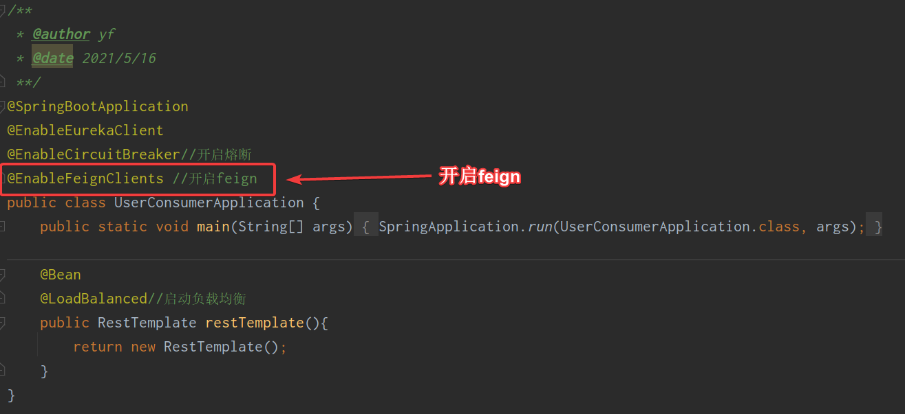
1.3负载均衡
Feign自身已经集成了Ribbon，因此使用Feign的时候，不需要额外引入依赖。

Feign内置的ribbon默认设置了请求超时时长，默认是1000，可以修改
ribbon内部有重试机制，一旦超时，会自动重新发起请求。如果不希望重试可以关闭配置：
1 | # 修改服务地址轮询策略，默认是轮询，配置之后变随机 |
1.4熔断器支持
feign整合Hystrix熔断器
Feign默认也有对Hystrix的集成!

实现步骤：
1 | 在配置文件application.yml中开启feign熔断器支持 |
(1)开启Hystrix
在配置文件application.yml中开启feign熔断器支持：默认关闭
1 | feign: |
(2)熔断降级类创建
修改user-consumer,创建一个类com.yuefeng.feign.fallback.UserClientFallback，实现刚才编写的UserClient，作为FallBack的处理类,代码如下：
1 |
|
(3)指定Fallback处理类
在@FeignClient注解中，指定FallBack处理类
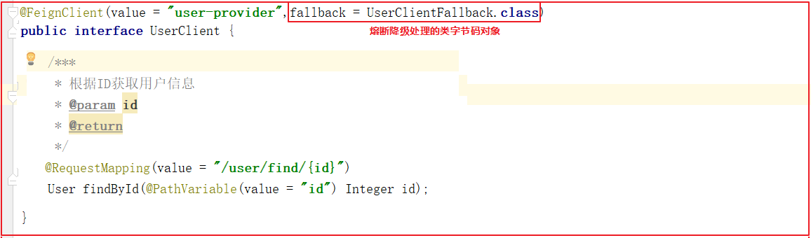
1.5请求压缩(了解)
SpringCloudFeign支持对请求和响应进行GZIP压缩，以减少通信过程中的性能损耗。
通过配置开启请求与响应的压缩功能：
1 | feign: |
也可以对请求的数据类型，以及触发压缩的大小下限进行设置
1 | # Feign配置 |
1.6Feign的日志级别配置
通过loggin.level.xx=debug来设置日志级别。然而这个对Feign客户端不会产生效果。因为@FeignClient注解修饰的客户端在被代理时，都会创建一个新的Feign.Logger实例。我们需要额外通过配置类的方式指定这个日志的级别才可以。
实现步骤：
1 | 在application.yml配置文件中开启日志级别配置 |
实现过程：
(1)普通日志等级配置
在user-consumer的配置文件中设置com.yuefeng包下的日志级别都为debug
1 | # com.yuefeng 包下的日志级别都为Debug |
(2)Feign日志等级配置
在user-consumer中创建com.yuefeng.feign.util.FeignConfig,定义日志级别
1 |
|
日志级别说明：
1 | Feign支持4中级别： |
(3)指定配置类
修改user-consumer的com.yuefeng.feign.UserClient指定上面的配置类，代码如下：
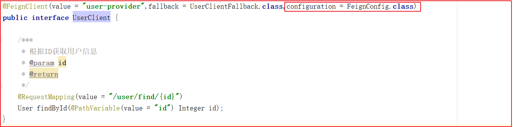
重启项目，即可看到每次访问的日志
1.7 小结
Feign的作用:不再使用拼接URL的方式实现远程调用，以接口调用的方式实现远程调用，简化了远程调用的实现方式，增强了远程调用的功能，例如：增加了负载均衡、熔断、压缩、日志启用。
掌握Feign的使用过程
1
2
31.引入Feign依赖包
2.创建Feign接口,feign接口中需要指定调用的服务名字
3.使用@EnabledFeignClients启用Feign功能掌握Feign的负载均衡配置
1
2在配置文件中配置
:ribbon:负载均衡属性配置掌握Feign的熔断配置
1
2
31.在application.yml中开启Hystrix
2.给Feign接口创建一个实现类
3.给Feign指定fallback类掌握Feign的压缩配置
1
在application.yml中指定压缩属性即可
掌握Feign的日志配置
1
2
31.在application.yml中开启普通日志等级
2.创建一个类，定义Feign日志等级
3.在Feign接口中指定定义日志的配置2.Spring Cloud Gateway
2.1Gateway 简介
Spring Cloud Gateway 是Spring Cloud团队的一个全新项目，基于Spring 5.0、SpringBoot2.0、Project Reactor 等技术开发的网关。 ==旨在为微服务架构提供一种简单有效统一的API路由管理方式。==
Spring Cloud Gateway 作为SpringCloud生态系统中的网关，目标是替代Netflix Zuul。Gateway不仅提供统一路由方式，并且==基于Filter链的方式提供网关的基本功能。例如：安全，监控/指标，和限流。==
本身也是一个微服务，需要注册到Eureka
网关的核心功能：过滤、路由
核心概念：通过画图解释
- 路由(route)：
- 断言Predicate函数：路由转发规则
- 过滤器(Filter)：
2.2快速入门
(1)创建一个子工程gateway-service
工程坐标：
1 | <artifactId>gateway-service</artifactId> |
(2)pom.xml依赖
1 |
|
(3)启动类
创建启动类com.yuefeng.GatewayApplication,代码如下：
1 |
|
(4)application.yml配置
1 | # 注释版本 |
通过网关配置一个路由功能，用户访问网关的时候,如果用户请求的路径是以/user开始，则路由到user-provider服务去,修改application.yml配置即可实现，配置如下：
1 | spring: |
2.3路由配置
通过网关配置一个路由功能，用户访问网关的时候,如果用户请求的路径是以/user开始，则路由到user-provider服务去,修改application.yml配置即可实现，配置如下：
1 | spring: |
启动GatewayApplication测试
访问http://localhost:18084/user/find/2会访问user-provider服务
2.4动态路由

刚才路由规则中，我们把路径对应服务地址写死了！如果服务提供者集群的话，这样做不合理。应该是根据服务名称，去Eureka注册中心查找服务对应的所有实例列表，然后进行动态路由！
修改映射配置：通过服务名称获取：
修改application.yml
因为已经配置了Eureka客户端，可以从Eureka获取服务的地址信息，修改application.yml文件如下:
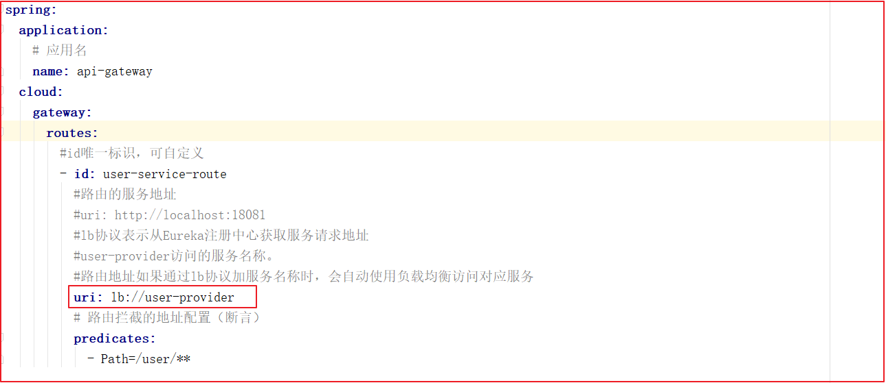
上图代码如下：
1 | spring: |
路由配置中uri所用的协议为lb时，gateway将把user-provider解析为实际的主机和端口，并通过Ribbon进行负载均衡。
2.5 过滤器
过滤器作为Gateway的重要功能。常用于请求鉴权、服务调用时长统计、修改请求或响应header、限流、去除路径等等…
2.5.1 过滤器的分类
1 | 默认过滤器：出厂自带，实现好了拿来就用，不需要实现 |
默认过滤器几十个，常见如下：
| 过滤器名称 | 说明 |
|---|---|
| AddRequestHeader | 对匹配上的请求加上Header |
| AddRequestParameters | 对匹配上的请求路由 |
| AddResponseHeader | 对从网关返回的响应添加Header |
| StripPrefix | 对匹配上的请求路径去除前缀 |
详细说明官方链接
2.5.2 默认过滤器配置
默认过滤器有两个：全局默认过滤器和局部默认过滤器。
全局过滤器：对输出响应头设置属性
对输出的响应设置其头部属性名称为X-Response-Default-MyName,值为yuefeng
修改配置文件
1 | spring: |
查看浏览器响应头信息!
局部过滤器：通过局部默认过滤器，修改请求路径。局部过滤器在这里介绍两种：添加路径前缀、去除路径前缀。
第一：添加路径前缀：
在gateway中可以通过配置路由的过滤器PrefixPath 实现映射路径中的前缀
配置请求地址添加路径前缀过滤器
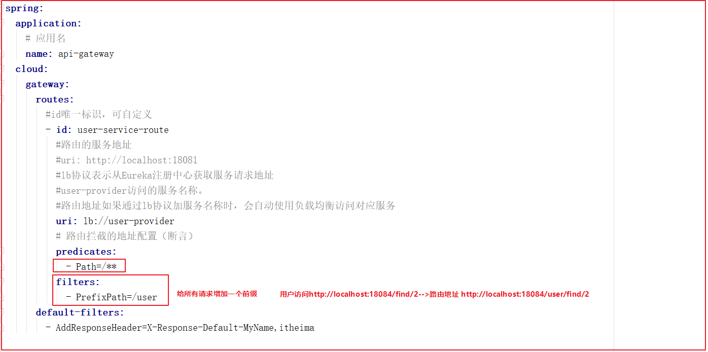
上图配置如下：
1 | spring: |
路由地址信息：
| 配置 | 访问地址 | 路由地址 |
|---|---|---|
| PrefixPath=/user | http://localhost:18084/find/2 | http://localhost:18081/user/find/2 |
第二：去除路径前缀：
在gateway中通过配置路由过滤器StripPrefix，实现映射路径中地址的去除。通过StripPrefix=1来指定路由要去掉的前缀个数。如：路径/api/user/1将会被路由到/user/1。
配置去除路径前缀过滤器
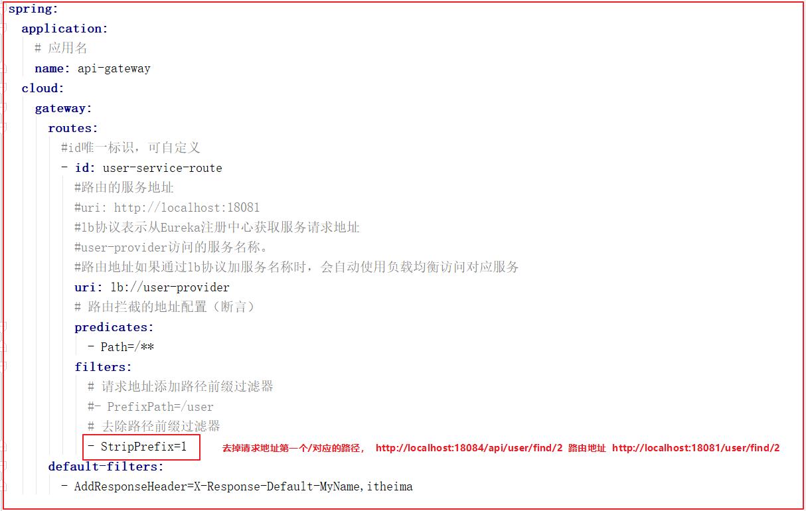
上图配置如下：
1 | spring: |
路由地址信息：
| 配置 | 访问地址 | 路由地址 |
|---|---|---|
| StripPrefix=1 | http://localhost:18084/api/user/find/2 | http://localhost:18081/user/find/2 |
| StripPrefix=2 | http://localhost:18084/api/r/user/find/2 | http://localhost:18081/user/find/2 |
2.5.3 自定义过滤器案例
自定义过滤器也有两个：全局自定义过滤器，和局部自定义过滤器。
自定义全局过滤器的案例，自定义局部过滤器的案例。
自定义全局过滤器的案例：模拟登陆校验。
基本逻辑：如果请求中有Token参数，则认为请求有效放行，如果没有则拦截提示授权无效
2.5.3.1 全局过滤器自定义：
实现步骤：
1 | 1.在gateway-service工程编写全局过滤器类GlobalFilter,Ordered |
实现过程：
在gateway-service中创建com.yuefeng.filter.LoginGlobalFilter全局过滤器类,代码如下：
1 |
|
测试：不携带token <http://localhost:18084/api/user/find/2>效果如下：

测试：携带token <http://localhost:18084/api/user/find/2?token=abc> 此时可以正常访问。
2.5.3.2 局部过滤器定义
自定义局部过滤器，该过滤器在控制台输出配置文件中指定名称的请求参数及参数的值,以及判断是否携带请求中参数,打印.
实现步骤：
1 | 在gateway-service中编写MyParamGatewayFilterFactory类 |
实现过程：
在gateway_service中编写MyParamGatewayFilterFactory类
1 |
|
修改application.yml配置文件
1 | filters: |
测试访问，检查后台是否输出name和yuefeng；访问<http://localhost:18084/api/user/find/2?name=yuefeng&tomen=aaa>会输出。
2.5.4 微服务架构加入Gateway后
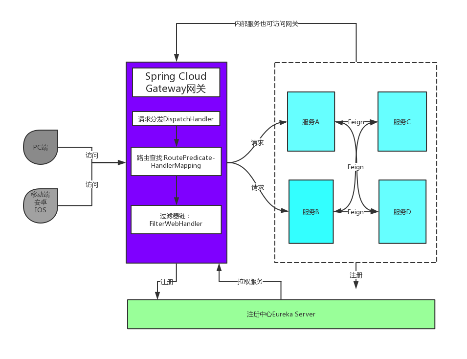
- 不管是来自客户端的请求，还是服务内部调用。一切对服务的请求都可经过网关。
- 网关实现鉴权、动态路由等等操作。
- Gateway就是我们服务的统一入口
2.4 小结
网关的作用
1
21.为微服务架构提供一种简单有效统一的API路由管理方式
2.可以在网关中实现微服务鉴权、安全控制、请求监控、限流会配置动态路由
1
使用lb配置，能根据服务名字动态请求。
会配置过滤器
1
:
能自定义全局过滤器
1
编写过滤器类，实现GlobalFilter和Ordered，在filter方法中实现过滤。
3.Spring Cloud Config
3.1 Config简介
分布式系统中，由于服务数量非常多，配置文件分散在不同微服务项目中，管理极其不方便。为了方便配置文件集中管理，需要分布式配置中心组件。在Spring Cloud中，提供了Spring Cloud Config，它支持配置文件放在配置服务的本地，也支持配置文件放在远程仓库Git(GitHub、码云)。配置中心本质上是一个微服务，同样需要注册到Eureka服务中心！
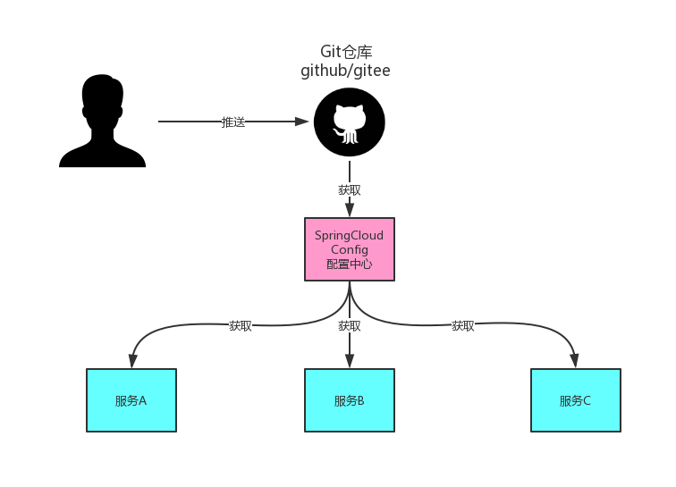
【配置中心的架构图】
3.2Git配置管理
3.2.1远程Git仓库
- 知名的Git远程仓库有国外的GitHub和国内的码云(gitee)；
- GitHub主服务在外网，访问经常不稳定，如果希望服务稳定，可以使用码云；
- 码云访问地址：http://gitee.com
3.2.2 创建远程仓库
首先使用码云上的git仓库需要先注册账户
账户注册完成，然后使用账户登录码云控制台并创建公开仓库
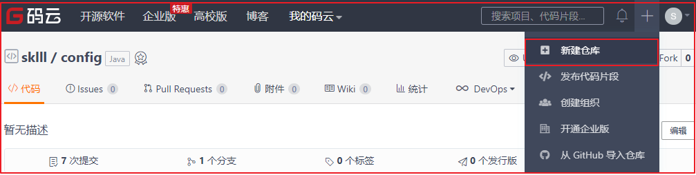
配置仓库 名称和路径
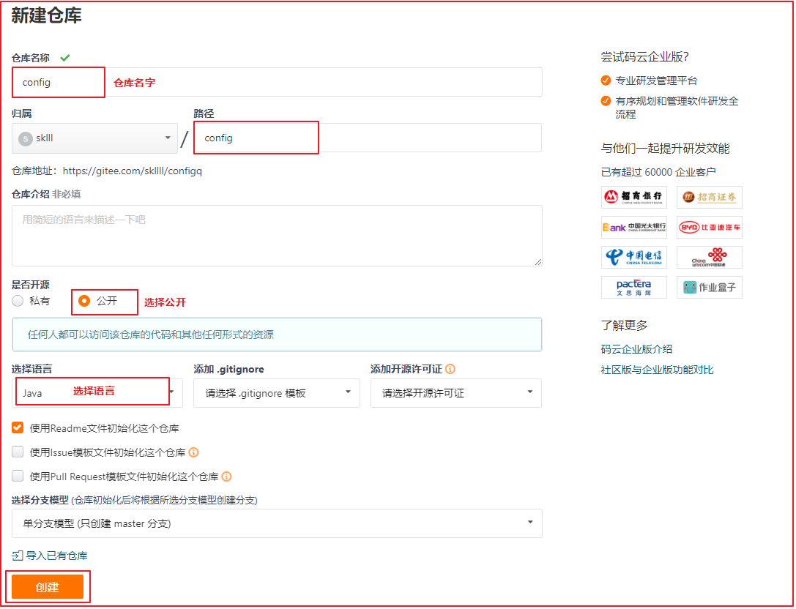
3.2.3 创建配置文件
在新建的仓库中创建需要被统一配置管理的配置文件
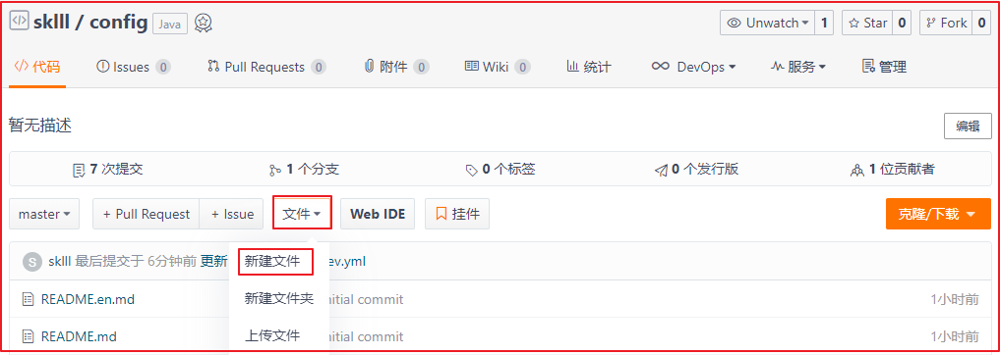
文件命名有规则：
1 | 配置文件的命名方式：{application}-{profile}.yml或{application}-{profile}.properties |
创建一个user-provider-dev.yml文件
将user-provider工程里的配置文件application.yml内容复制进去。
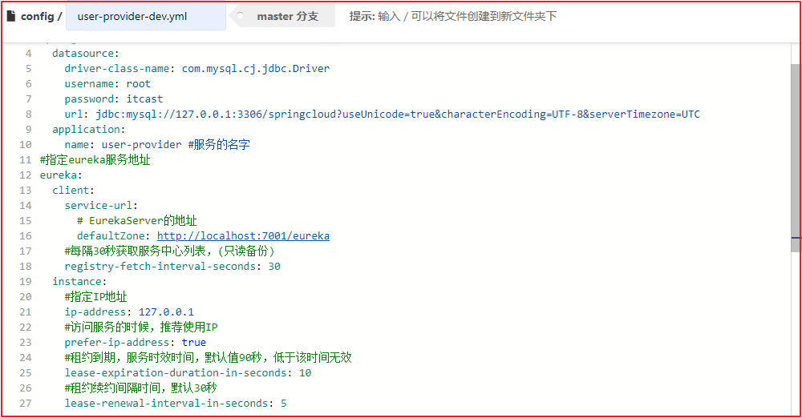
创建完user-provider-dev.yml配置文件之后，gitee中的仓库如下：
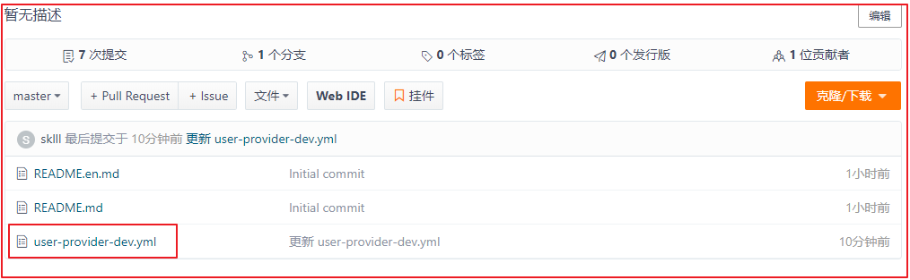
1. 搭建配置中心微服务
实现步骤：
1 | 创建配置中心SpringBoot项目config_server |
实现过程：
(1)创建工程
工程坐标
1 | <artifactId>config-server</artifactId> |
(2)pom.xml依赖
1 |
|
(3)创建启动类
在config-server工程中创建启动类com.yuefeng.ConfigServerApplication,代码如下：
1 |
|
(4)application.yml配置文件
1 | # 注释版本 |
注意：上述spring.cloud.config.server.git.uri是在码云创建的仓库地址
(5)测试
启动config-server，访问<http://localhost:18085/user-provider-dev.yml>，效果如下：
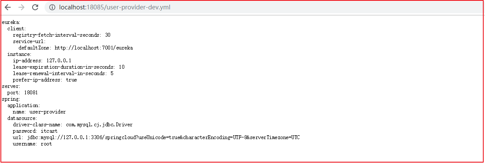
可以查看到码云上的文件数据，并且可以在gitee上修改user-dev.yml，然后刷新上述测试地址也能及时更新数据
2.服务去获取配置中心配置
目标：改造user-provider工程，配置文件不再由微服务项目提供，而是从配置中心获取。
实现步骤：
1 | 添加配置中心客户端启动依赖 |
实现过程：
(1)添加依赖
1 | <!--spring cloud 配置中心--> |
(2)修改配置
删除user-provider工程的application.yml文件
创建user-provider工程bootstrap.yml配置文件，配置内容如下
1 | # 注释版本 |
关于application.yml和bootstrap.yml文件的说明：
1 | - bootstrap.yml文件是SpringBoot的默认配置文件，而且其加载时间相比于application.yml更早。 |
启动测试：
启动服务中心、配置中心、用户中心user_service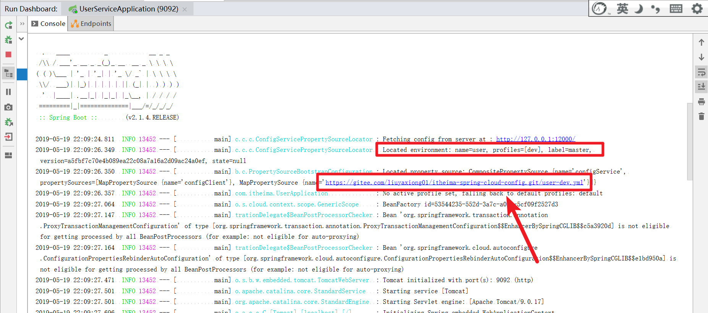
如果启动没报错，其实已经使用上配置中心内容了
可以在服务中心查看也可以检验user_service的服务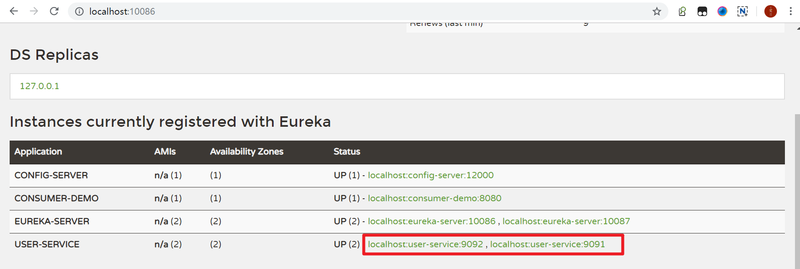
3.配置中心存在的问题
(1)修改码云配置文件
修改在码云上的user-provider-dev.yml文件，添加一个属性test.message,如下操作：
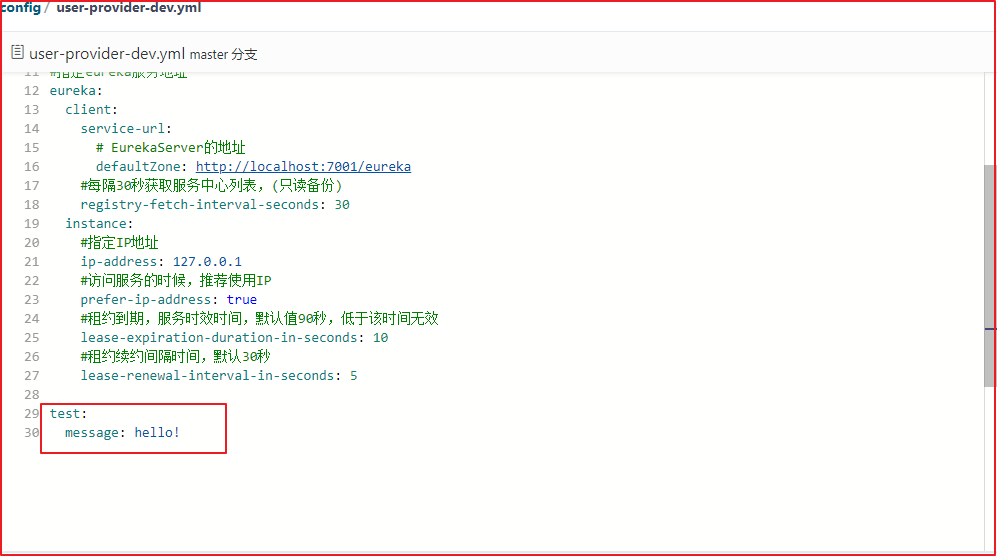
(2)读取配置文件数据
在user-provider工程中创建一个com.yuefeng.controller.LoadConfigController读取配置文件信息，代码如下：
1 |
|
启动运行user-provider，访问<http://localhost:18081/config/load>
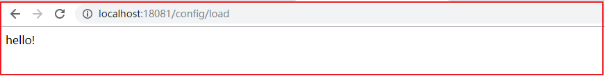
修改码云上的配置后，发现项目中的数据仍然没有变化,只有项目重启后才会变化。
3.3 小结
配置中心的作用:将各个微服务的配置文件集中到一起进行统一管理。
能搭建配置中心
1
需要在application.yml配置文件中指定需要远程更新的仓库地址。
修改微服务，从配置中心获取修改的配置
1
2
3
4
5
6
7
8
9
10
11
12
13
14
15
16创建bootstrap.yml，并在bootstrap.yml中配置
# 注释版本
spring:
cloud:
config:
name: user-provider # 与远程仓库中的配置文件的application保持一致，{application}-{profile}.yml
profile: dev # 远程仓库中的配置文件的profile保持一致
label: master # 远程仓库中的版本保持一致
discovery:
enabled: true # 使用配置中心
: config-server # 配置中心服务id
#向Eureka服务中心集群注册服务
eureka:
client:
:
defaultZone: http://127.0.0.1:7001/eureka